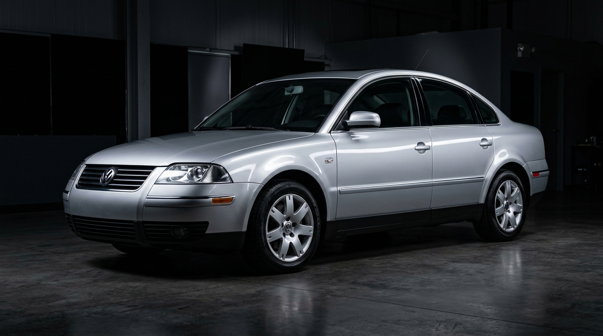
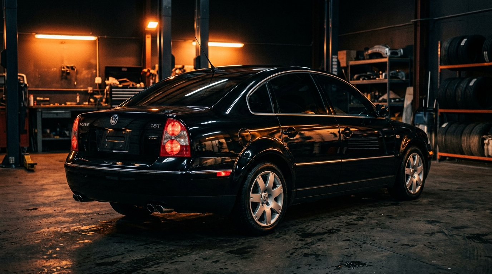

Jet Garaj; motor mekanik tamir, periyodik ağır bakım, profesyonel pasta-cila, seramik kaplama ve Passat B5 & B5.5 kasalarda uzman kadrosuyla hizmetinizde.
Aracınızın motor performansından kaporta parlaklığına kadar ihtiyacı olan tüm bakımlar Jet Garaj güvencesinde.
Periyodik yağ ve filtre değişimleri, triger seti değişkliği, ağır bakım, ön takım, fren diski ve balata yenileme işlemleri titizlikle yapılır.
Aracınızın boyasındaki kılcal çizikleri, hareleri ve güneş yanıklarını profesyonel ekipmanlarla yok ediyor, ilk günkü vitrin parlaklığına kavuşturuyoruz.
Son teknoloji arıza tespit cihazlarımızla aracınızın elektronik ve mekanik tüm kodlarını okuyor, nokta atışı teşhis ile gereksiz masrafların önüne geçiyoruz.
Passat B5 ve B5.5 kasaların ruhunu ve tüm detaylarını çok iyi biliyoruz. 1.8T turbo vakum kaçaklarından 1.9 TDI pompa meme ayarlarına, çok noktadan bağlantılı ön salıncak takımlarından kronik su alma ve elektrik tesisatı sorunlarına kadar her detayda usta dokunuşu!
Kaçak tespiti, N75 valfi kontrolleri ve turbo basınç optimizasyonu.
B5/B5.5 kasanın konforunu belirleyen ön süspansiyon grubunda orijinal standartlarda işçilik.

İstanbul Starcity AVM lokasyonumuzda temiz, düzenli ve şeffaf hizmet anlayışı.
Formu doldurun veya direkt WhatsApp üzerinden usta ile iletişime geçin. Aracınızın ihtiyacını belirtin, hemen dönüş yapalım.
İstanbul Starcity AVM kapalı otopark alanında kolay ulaşım imkanı ile hizmetinizdeyiz.
İstanbul Starcity AVM Lokasyonu, Yenibosna / İstanbul
Hafta İçi ve Cumartesi: 08:30 - 19:30